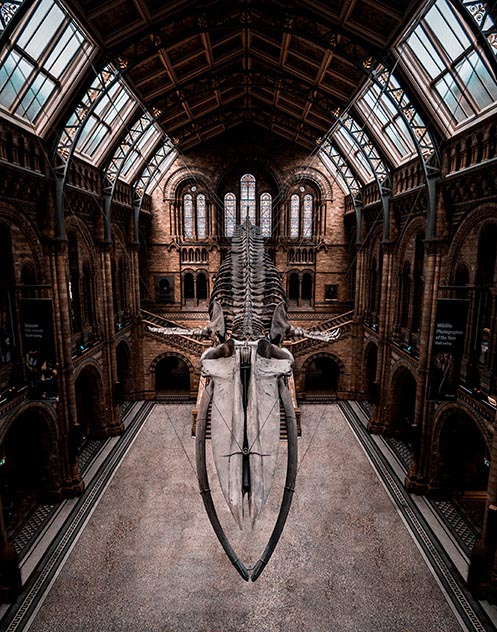

Exhibitions
Community Science Museum offers a variety of exhibitions that attract both children and adults. We focus on the educational aspects of our exhibits by presenting them to the audience in a way that will be memorable for a long time after their visit. Everybody has the right for knowledge and here you can learn about Newtonian physics, how our world progressed through the centuries and how the ecosystem around us works. Among these as well you can attend many experiments about renewable energy, the spectacular world of AI and learn how biology and medicine come together to help humanity.
The majority of our exhibitions have an interactive style, something that makes them even more attractive for big and small children.
We try to change our exhibitions every time we think that something exciting has come up and it needs to be shown to the public. The time that an exhibition is open to the public varies between 6-12 months and we always announce in advance the last day of them.
We would like your feedback and your thoughts about the current exhibitions after your visit, as well with possible wishes or suggestions that you may have for a future exhibition.
